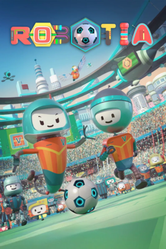

Personajes de Manuel García-Ferré
- Manuelita (1999)2.210.600 espectadores

- Corazón: Las Aventuras de Pantriste (2000)1.030.126 espectadores

- Corazón: Las Aventuras de Pantriste (2000)1.030.126 espectadores
- Soledad y Larguirucho (2012)

- Soledad y Larguirucho (2012)
- Dibu 3: La Gran Aventura (2002)238.504 espectadores

- Patoruzito 2 (2006)348.665 espectadores

- Ratón Pérez (2006)956.050 espectadores

- Boogie el Aceitoso (2009)96.460 espectadores

- Gigantes una aventura extraordinaria (2024)35.551 espectadores

- Robotia (2024)11.733 espectadores
- La Gallina Turuleca (2019)135.158 espectadores

- Don Gato y su pandilla (2011)116.962 espectadores

- Plumíferos, Aventuras Voladoras (2010)89.257 espectadores

- Cuentos de la Selva (2010)155.988 espectadores

- Micaela, una película Mágica (2002)78.383 espectadores

- Los Pintin al Rescate (2000)133.761 espectadores